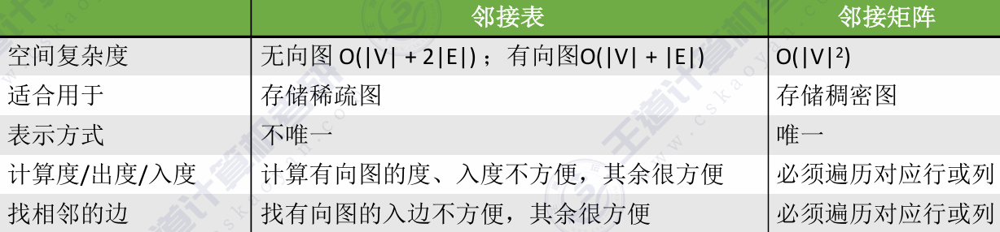
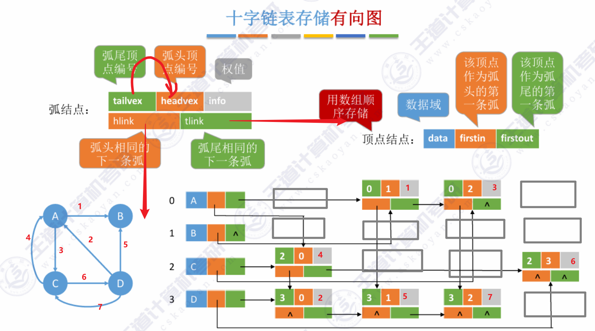

本文整理考研数据结构核心知识，包括线性表、树、图、查找、排序等内容。
绪论
数据结构
算法
程序=数据结构+算法
数据结构是要处理的信息，算法是处理信息的步骤。
- 有穷性：有穷步得到结果，每一步时间有穷
- 确定性：指令明确，相同输入，相同输出
- 可行性：能用代码实现
- 输入:0，多个
- 输出:1，多个
算法一定有一个输出类似函数F(x)，
好的算法的特质
1. 正确性：正确解决问题
1. 可读性：让人好理解，注释//，变量命名等。
1. 健壮性：非法输入有响应，有处理。
1. 高效率：画的是时间少(时间复杂度)；存储需求少：系统空间少(空间复杂度)
算法的效率度量
- 时间复杂度
事后统计？大幅度受到外界因素影响
事前预估时间开销T(n)与问题规模n的关系？
时间开销只需要考虑到最高阶就可以
T(n)=O(n),T(n)=O(n^2),T(n)=O(n^3)……
：多项相加，只保留最高阶
：多项相乘，都保留

常对幂指阶
注意：只需要看循环部分的代码，顺序执行的代码只会影响常数项，可以忽略。
所以，只需找到循环当中的一个基本操作分析它的执行次数和n的关系即可。
多层嵌套循环，只需关注最深层循环
最坏时间复杂度：
平均时间复杂度：
- 空间复杂度
S(n)=O(1)
算法原地工作—-算法所需要的内存空间为常量
S(n)=O(n)
即与问题规模n相关的存储变量的大小，例如：flag[n]–S(n)=O(n),flag[n]/[n]–S(n)=O(n^2)。
函数递归调用带来的内存开销：


线性表
线性表是具有相同数据类型的n(n>=0)个数据元素的 有限序列 ，n为表长，当n=0时候线性表示一个空表。

什么时候传入参数引用“&”—-对参数修改结果需要“带回来”。
就是函数执行过程会申请独立空间重新复制一个和main当中变量类似的同名变量，但是实际上是不一样的，两者地址不一样；如果使用的是&则是取当前变量地址作为传参，这样申请的空间存储的是地址，对数据元素操作的时候修改会先找到地址再修改，这样的影响是全局的，在main当中的变量也会修改。
也就是在，需要修改全局内容，的时候就要传入带&的数据元素。
顺序表
顺序表：用顺序存储的方式实现线性表顺序存取。
LOC(L) , LOC(L)+数据元素大小*i ，
sizeof(int)=4B; sizeof(变量名)
顺序表静态分配

如果没有默认初始化数据，分配链表内存的地址内的比特值不会自动置0，也就是内存残留，这样我们在尝试打印的时候就会出现未知数字，也就是当前地址的默认比特值。在访问链表的时候要遵循链表长度的限制即i<L.length;同样L.length也必须初始化设置，如果是maxsize，这是违规的，因为未定义的位置在逻辑上不算链表的一部分，只是物理结构的一部分。当然可以采用动态连表来解决这种问题。
？？数组满了怎么办：重新建？
顺序表动态分配

顺序表的插入和删除
插入

位序=下标+1；
也就是在将要插入的位置(位序=i)的后面的L.length-i个元素全部后移移位，建立for循环，从最后开始移位，j=L.length,什么时候停止？当j=i的时候应该是最后一次执行，所以j>=i；j–，循环当中链表元素的下标统一比位序小一，即要将位序j放到j+1，就是Data[j-1]的元素放到L.data[j]的位置。循环结束之后也应该是将待插入元素e放到位序=i，L.data[i-1]的位置。
所以链表未定义位置不能凭空插入，如果长度只有5，但却要在9插入，就是不正确的，同时需要建立条件判断插入位置是否合理；除此之外，还要考虑静态连表插入之前是否已经满列？满了返回不允许，或者动态的时候重新调用 分配新内存函数，新内存传参为1或者待插入元素列表大小。
优化代码如下


删除

e是全局变量，所以要用&取地址，可以将函数内部的改变读取出来，就是删除元素的值返还给e。
最后一次移位是将位序length的复制给length-1，所以j的判断条件应该要执行到length这个位置，下标是length-1，所以j最大只需要执行到length-1就可以，所以判断条件j<length是对的。

顺序表的查找
线性表按位查找
动态分配的data和静态分配的data是不一样痒的
| 版本 | 定义形式 | 本质 | 内存分配方式 |
|---|---|---|---|
| 静态分配 | ElemType data[MaxSize]; |
数组名 | 编译时就分配好连续内存，是静态数组 |
| 动态分配 | ElemType *data; |
指针变量 | 运行时通过 malloc 等函数动态申请内存，指向一块连续的堆内存 |
不管 data 是数组名，还是指针变量，在 data[i-1] 这种写法里，它的行为完全一样 —— 都等价于一个指针！
- 数组的 data：是常量指针（地址永远不能变）
- 指针的 data：是变量指针（地址可以随便改）
但取值方式一模一样。

1 | L.data = (int *)malloc(InitSize * sizeof(int)); |
- 右边：
malloc(...)→void * - 左边：
L.data→int * - 中间：
(int *)→ 强制类型转换
1 | int a[5] = {10, 20, 30, 40, 50}; |
内存布局：
1 | 地址： a[0] a[1] a[2] a[3] a[4] |
那么：
p[0]→ 10p[1]→ 20p[2]→ 30
线性表按值查找

结构类型不可直接使用==比较

单链表
不可随机存取，每个节点存储自身元素还有指向下一个节点的指针。
定义：


1 |
|
LNode和LinkList的区别：
LNode *L和LinkList L是完全等价的，只是写法不同：LinkList更强调 “这是一个链表”，LNode*更强调 “这是一个结点指针”。ElemType的作用：用抽象类型是为了让链表逻辑通用，不管存什么类型，只需要改ElemType的定义，不需要修改链表的操作代码（比如插入、删除、遍历）。- 结构体自引用：
next指针必须用struct LNode *，不能用LNode *，因为结构体定义内部typedef的别名还没生效。 - 内存管理：用
malloc动态创建的结点，必须用free释放，否则会造成内存泄漏。


不带头节点，写代码的时候不方便。
单链表插入和删除
按位序插入(带头节点)

不带头节点的单链表再插入删除第一个结点的时候都要修改链表指针L

指定节点后插操作，指定节点前插操作。

按位序删除


单链表的查找
按位查找

如果不加上if(i<1)会怎么样？
没加执行步骤：
p初始指向第 1 个数据结点，j=1i==0不成立，跳过- 直接进入循环判断：
while(p!=NULL && j < i)→j=1，i=-1→1 < -1条件为假，循环完全不执行 - 直接
return p→ 错误地返回了第 1 个数据结点！
后果：非法的负位置输入，却返回了有效结点，完全不符合预期，属于严重的逻辑 bug。
加了if(i<1)的正确逻辑
同样输入i=-1：
i==0不成立，跳过i<1成立，直接return NULL→ 正确返回「查找失败」，彻底避免了错误。
对于i>n（超出表长的位置）：
- 循环会一直执行到
p==NULL（链表末尾），最终return p自动返回NULL，不需要额外拦截。 - 只有
i<0的情况：循环条件j<i（j=1，i<0）永远不成立，会直接返回初始的p（第 1 个数据结点），必须单独拦截。
按值查找
单链表的建立

其实链表建立就是地址空间的链接，不需要记住每一个的地址，只需要记住第一个地址就行，所以申请空间之后不需要保留空间地址，只需等到结束统一释放。
所以在创建链表的时候就不需要和数组和顺序表一样记住下标，赋值完成，下一个节点指针给出就可以了。
所以这里while循环两个指针r，s，让r指针始终指着链表的尾部，s择充当临时节点指针。在新节点建立完成之后，将r->next指向s，就完成了链接，这样新的链表的表尾部就是当前s的位置，再让r指向尾部，此时并没有结束，因为现在的r->next指向的是随机位置，需要单独赋值NULL，那为什么s->next不需要呢？因为结束的时候r和s都指向的同一个节点，操作只需要执行一次。这样就完成一次新节点建立。
不带头节点写法
1 | typedef struct LNode{ |

不带头节点
1 | typedef struct LNode{ |
最终结果和带头结点的头插法完全一致（逆序输入），仅少了一个不存数据的头结点。
不带头结点头插法的经典应用 —— 链表逆置
1 | // 不带头结点单链表的逆置（头插法思路） |
双链表
初始化
1 | typedef struct DNode { |
遍历
1 | void TraverseDNodeLinkList(DlinkList &L){ |
插入节点
1 | // 在结点p之后插入值为e的新结点 |
删除操作
1 | // 删除结点p的后继结点 |
按位序插入（在第i个位置插入元素e）
1 | bool InsertDLinkList(DLinkList &L, int i, int e) { |
按位序删除（删除第i个位置的元素
1 | bool DeleteDLinkList(DLinkList &L, int i) { |
向前遍历
1 | // 双链表 向前遍历（反向打印，从尾到头） |
循环链表
链表相关代码-应用
合并两个顺序表
1 | typedef struct SQlistnode{ |
栈、队列
顺序栈
1 |
|
链栈
插入和删除都在表头进行，也就是在采用头插法的时候，top指向的是链表表头，也是栈的头指针。
判空条件是top==NULL，栈底也就是链表尾部不设置指针，相当于最简单的链表。
1 | struct node { |
栈的应用
递归调用、地图染色
递归调用主要是理解递归函数调用规则，理解递归函数执行顺序。
地图染色问题：前提背景是四色定理任意地图都可以使用四种颜色表示行政区域。
使用到的思想是：递归，回溯，树，图，栈。
将地图上的区域抽象成图的点，点之间的关系就是边。构成的无向图就是最基本的模型。
将图像上点之间的关系用关系矩阵R[i][j]表示。R[i][j]=1表示i+1和j+1是连通的。
S[i]=k;表示第i+1块区域的颜色是K，k=1、2、3、4.
算法如下:
注意这个代码只是为了找到第一条S[]，并不是最优，就只是算法顺序给出的第一解，不是唯一解。
这里面栈的变化发生在S[]当中，一旦下一个区域无法染色就会删除栈顶颜色，并选择另外一个颜色。
1 | int N=7; |
#### **括号匹配**
最后出现的左括号最先被匹配，LIFO，每次出现一个右括号弹出栈顶左括号。

1 |
|
#### **表达式求值**
中缀表达式求值、模拟入栈出栈顺序
OPTR栈：#…… #
OPND栈：7 8……
直接按顺序计算就好了

后缀表达式求值，模拟入栈出栈顺序
后缀表达式，从左往右，操作数入栈，运算符则从栈中pop两个数据运算符运算后push，先出栈的是右操作数。


AB+CD*E/-F+
+后面-进栈的时候发现+和-优先级相等，先弹出+再进栈-；-*，接下来/进栈，/*相等，先出*,下一个-小于/不出栈，继续。
函数递归
递归表达式+边界出口
将问题规模逐渐减小，使其收敛到边界。
缺点：太多层递归导致栈溢出。
队列
顺序队列
1 |
|


链队列
有头尾指针，且限制在表头删除，在表尾增加的带头节点，p指向头节点的单链表。
实际上是单独申请两个指针指向带头节点链表的头节点和尾解点。
front指向head节点，rear指向最后一个节点rear->next==NULL。
1 | typedef struct{ |
1 | 链式队列分为带头结点和不带头结点两种主流实现，删除最后一个元素时都需要手动修正尾指针。 |
顺序队列用连续数组存储，通过front（队头下标）和rear（队尾下标）标记位置。
- 普通非循环顺序队列（极少使用）
- 判空条件：
front == rear - 判满条件：
rear == MaxSize（数组下标达到最大边界） - 缺点：存在「假溢出」—— 队头删除后前面的空间无法复用，实际工程和考试几乎不用。
- 循环顺序队列（核心考点）
通过取模运算让数组首尾相连，解决假溢出问题。由于front == rear同时对应「队空」和「队满」两种状态，因此需要额外机制区分，主流有 3 种实现方案：
方案 1：牺牲 1 个存储单元（教材默认方案，最常考）
约定队尾指针再前进 1 步就碰到队头时，判定为队满，空出 1 个单元不存数据。
- 判空条件：
front == rear - 判满条件：
(rear + 1) % MaxSize == front - 队列元素个数公式：
(rear - front + MaxSize) % MaxSize
方案 2：增加 size 计数器
用额外变量size记录当前队列元素总数，直观易懂，不浪费空间。
- 判空条件：
size == 0 - 判满条件：
size == MaxSize - 操作逻辑：插入元素时
size+1，删除元素时size-1。
方案 3：增加 tag 标志位
用标志位tag记录最后一次操作类型：tag=1表示最后一次是插入，tag=0表示最后一次是删除。只有插入操作才可能让队列变满，只有删除操作才可能让队列变空。
- 判空条件：
front == rear && tag == 0 - 判满条件：
front == rear && tag == 1
链式队列通过链表结点动态申请内存，理论上不存在天然的 “队满” 状态（只要系统内存足够就可以一直插入元素）；只有人为限定队列最大长度时，才需要通过计数判满。
根据是否带头结点，判空条件分为两种：
- 带头结点的链式队列（教材主流实现）
头结点不存储有效数据，front永远指向头结点，rear指向最后一个有效结点。
判空条件：
1
front == rear
（空队列时头尾指针都指向头结点）等价写法：
1
front->next == NULL
判满条件：无默认判满；若限定最大长度，可通过计数变量判断
count == MaxSize。
对应你之前的疑问：删除最后一个元素时，必须手动把
rear指向头结点，才能维持front == rear的空队列判定；否则尾指针会成为野指针，判空逻辑失效。
- 不带头结点的链式队列
front直接指向队头结点，rear直接指向队尾结点。
- 判空条件：
front == NULL && rear == NULL（两个指针必须同时为空） - 判满条件：同带头结点，无天然队满，限长场景用计数判断。
| 队列类型 | 判空条件 | 判满条件 | 备注 |
|---|---|---|---|
| 普通顺序队列 | front == rear |
rear == MaxSize |
有假溢出，几乎不用 |
| 循环队列（牺牲单元） | front == rear |
(rear+1)%MaxSize == front |
教材默认方案，最高频考点 |
| 循环队列（计数器） | size == 0 |
size == MaxSize |
直观，不浪费存储空间 |
| 循环队列（标志位） | front==rear && tag==0 |
front==rear && tag==1 |
不浪费空间，逻辑稍复杂 |
| 带头结点链式队列 | front == rear |
无（限长用计数判断） | 操作最简便，主流实现 |
| 不带头结点链式队列 | front==NULL && rear==NULL |
无（限长用计数判断） | 无需头结点，删除尾元素需特殊处理 |
队列的应用
划分子集
核心思想就是不段循环遍历队列元素，以队首元素为基准，依次入判断是否冲突，多一个元素则多一次判断。
判断不符合的元素插入队尾，为了下一次遍历，每次遍历都会减少一个分组，每个分组至少有一个元素。
核心算法叫循环筛选法，必须用循环队列存放待分配、待筛选的元素：
- 所有元素先全部入队；
- 每次取队首元素作为当前组基准；
- 依次出队判断：和本组已有元素无冲突 → 留在本组；有冲突 → 重新插入队尾，等待下一轮新分组；
- 当取出的元素编号≤本轮起始基准，说明本轮筛选完毕，开启下一个新子集。
离散事件仿真
普通队列（窗口排队队列）
模拟资源竞争场景下实体的等待缓冲区，利用 FIFO 特性严格遵守排队先后顺序；同一窗口顾客按到达顺序依次办理业务。
优先队列 / 有序事件表（调度核心）
存储所有待执行事件，以发生时间为优先级，保证系统按真实时间顺序处理事件；仿真时钟直接跳转到下一个事件，不用逐单位时间扫描，大幅提升仿真效率。
数组的存储结构
一位数组:Li=LOC+i*sizeof(Elemtype)
二维数组；行优先，列优先
行优先任意元素位置Amn,Aij=LOC+(i*n+j)*sizeof(Elemtype)
列优先任意元素位置Amn,Aij=LOC+(j*m+i)*sizeof(Elemtype)
存储矩阵
a11,a12,a13……
a21,a22,a23…
……
an1….. ann
- 对称矩阵的压缩存储
存储策略：只存储主对角线和下三角区
行优先：1+2+3+4…..+n=n(n+1)/2
A[0],A[1],….A[n/(n+1)/2-1];
使用一个映射函数实现从矩阵下标转换到数组下表的过程。重点
aij是数组的第几个元素？
i>j,即下主对角线三角
第i(i-1)/2+j个元素，数组下表 i(i-1)/2+j-1
i<j,即上主对角三角
第第j(j-1)/2+i个元素，数组下表 j(j-1)/2+i-1
……同理可得列
主要注意数组下表和矩阵行列号的关系
- 三角矩阵
下三角，上三角
策略：按行优先将三角存储，再在最后一个位置存储常数
- 三对角矩阵
|i-j|<1,aij!=0
3n-2个，数组下表3n-3

- 稀疏矩阵


串
定义

串的存储结构
定长顺序存储(静态数组)
记录串长，A[0]/A[N]=l.length两者；缺点是只能表示TypeElemt长度
或者不显示表示字符长，但是以\0结尾；
或者char[0]舍弃不用，结尾记录长
链式存储
串的链式存储


索引存储
索引存储除了存储串值以外，还要存储串名与串值之间得对应关系得索引表。
带长度得索引表
每条索引包含三部分：
1 | 串名 | 起始地址 | 串长度 |
- 串名：字符串标识；
- 起始地址：该串第一个字符在串值存储区的地址；
- 串长度：该字符串包含的字符总个数
带末指针的索引表
索引项结构
1 | 串名 | 起始地址 | 末尾地址（尾指针） |
- 起始地址：串首字符地址；
- 末尾地址：串最后一个字符的地址。
串长计算：尾地址 - 首地址 + 1。
带特诊位的索引表
索引项结构
1 | 串名 | 起始地址 |
索引里不记录长度、不记录尾地址，只存字符串起始位置；
规定：串值区中，每个字符串末尾统一存放一个特殊结束特征符（如\0、# 等）作为分界。
工作原理,读取字符串：从起始地址开始逐个读取字符，直到读到特征结束符为止。
串的运算
模式匹配-串的定位算法
朴素模式匹配算法
1 | int index(SString S,SString T){ |
最好时间复杂度：O(m+n),最坏时间复杂度：O(mn)
KMP算法-手算next数组
1 | int index(SString S,SString T){ |
手算NEXT数组方法：


最坏时间复杂度O(m+n)
其中求next数组时间复杂O(m)
匹配模式最坏时间复杂度O(n)
next 数组长度 = 模式串长度 + 1
模式串共 6 个字符（下标 05），next 开到 06 共 7 个位置：
next[1]~next[5]：对应T[1]~T[5]匹配失败的回退位置；next[6]：匹配成功（整串匹配完成）的拓展下标，用于判断匹配结束；next[0]：仅边界占位，无业务含义，所以表格空白。
标准 KMP 通用定义（考试标准答案）
标准定义：
1 | next[0] = -1 |
- j=0 匹配失败，执行
j = next[0] = -1，然后i++, j++，直接跳到下一组匹配； - 这张 PPT 为了简化初学者理解，没有写 - 1，直接留白，代表该下标无可用回退值，单独走边界分支。
KMP算法求NEXT数组

优化后的KMP算法
手算求解netval数组
1 | nextval[1]=0; |
第一步求解next数组，包含j,模式(从左到右就是模式串)，next[j],遍历数组，
第二步，从左往右遍历，如果j对应的模式的值，等于next[j]下标对应的模式的值，就直接替换成next[j]对应模式的相对应值。
例如：

压缩存储
特殊矩阵-矩阵->数组
稀疏矩阵-矩阵->三元组
三元组表
十字链表法
树和二叉树

二叉树
二叉树的概念

二叉树的性质
一、普通二叉树通用性质
- 设 n 为总节点数，n0 度 0 叶子节点，n1 度 1 节点，n2 度 2 节点，则 n = n0 + n1 + n2。
- 二叉树总分支数为 n-1，分支由度 1、度 2 节点提供：n-1 = n1 + 2*n2。
- 联立推导核心结论：叶子节点数量 n0 = n2 + 1，所有二叉树恒成立。
- 二叉树第 i 层（层号从 1 开始）最多存在 2^(i-1) 个节点。
- 高度为 h 的二叉树，整棵树最多拥有 2^h - 1 个节点（满二叉树状态）。
- 含有 n 个节点的二叉树，高度范围：最小高度 floor (log2 n)+1，最大高度 n（单链斜树）。
二、满二叉树性质
- 每一层节点数量都达到该层最大值，不存在度为 1 的节点，n1=0。
- 高度 h 的满二叉树总节点 n=2^h -1，叶子仅出现在最后一层，叶子总数 2^(h-1)。
- 满足 n0 = n2 + 1，代入 n1=0 得总节点公式 n=2*n0 -1。
三、完全二叉树性质
- 仅最后一层节点未填满，且所有节点靠左连续排列。
- 数组顺序存储（下标从 1 开始），节点 i 的父子下标：父节点 floor (i/2)；左孩子 2i；右孩子 2i+1。
- 下标大于 n/2 的节点全部是叶子节点，无子女。
- 完全二叉树中度 1 节点只能是 0 个或 1 个：n 为奇数时 n1=0，n 为偶数时 n1=1。
- n 个节点完全二叉树高度 h = floor (log2 n)+1，满足 2^(h-1) ≤ n < 2^h。
- 叶子只分布在最后两层。
四、二叉树遍历相关结论
- 三种遍历规则：前序（根→左→右）、中序（左→根→右）、后序（左→右→根）。
- 仅中序序列搭配前序 / 后序其中一种，能唯一还原二叉树；仅有前序 + 后序无法确定唯一二叉树。
- 递归遍历时间复杂度 O (n)，空间复杂度 O (h)，h 为树的高度。
五、二叉排序树 BST 性质
- 任意节点，左子树所有关键字 < 当前节点关键字 < 右子树所有关键字。
- 中序遍历二叉排序树，结果为严格升序有序序列。
- 查找效率：平衡状态 O (logn)，最坏单链斜树 O (n)。
六、平衡二叉树 AVL 树性质
- 任意节点左右子树高度差（平衡因子）绝对值不超过 1。
- 节点左右子树本身也必须是平衡二叉树。
- 查找、插入、删除操作时间复杂度稳定为 O (logn)。
二叉树的存储结构
一、顺序存储（数组存储，适合完全 / 满二叉树）
存储规则：下标从 1 开始存储，节点 i：
父节点：⌊i/2⌋
左孩子：2i
右孩子：2i+1
下标大于 n/2 的节点都是叶子。
优缺点
优点：简单，随机访问父子节点，适合堆、完全二叉树。
缺点：普通斜树空间极度浪费，大量数组单元空置。
适用场景：满二叉树、完全二叉树、大根堆 / 小根堆。
二、链式存储（最常用，普通二叉树标准存储）
二叉链表结点结构；数据域 data，左孩子指针 lchild，右孩子指针 rchild。
结构定义：
typedef struct BiTNode {
int data;
struct BiTNode *lchild,*rchild;
} BiTNode,*BiTree;
特点每个结点最多两个指针，n 个结点二叉链表有 n+1 个空指针。仅能直接访问左右孩子，无法快速找父节点。
三、拓展：三叉链表（可快速找父节点）
- 结点结构data，lchild，rchild，parent 父指针。
- 优点：遍历、找双亲更方便；缺点：额外指针，空间开销更大。
- 适用：需要频繁向上回溯的场景。
二叉树遍历-深度vs广度
先序遍历：根左右
O(h+1)

中序遍历: 左根右

后序遍历：左右根

深度优先遍历的非递归算法
将递归算法转化为等价的非递归算法的一种简单方法，就是通过对递归调用过程的考查而得来的。这种方法使用一个堆栈 stack [N] 来保存每次调用的参数，这个堆栈的栈顶指针为 top，另设一个活动指针 p 来指向当前访问的结点。这里将讨论中序遍历的非递归算法，关于先序遍历和后序遍历的非递归算法，请读者自行设计。
中序遍历的非递归算法的基本思想是：当 p 所指的结点非空时，将该结点的存储地址进栈，然后将 p 指向该结点的左孩子结点；当 p 所指的结点为空时，从栈顶退出栈顶元素送 p，并访问该结点，然后将 p 指向该结点的右孩子结点；如此反复，直到 p 为空并且栈顶指针 top = -1 为止。
1 | void NinOrder(bitree *p){ |
层序遍历(广度优先遍历)

应用：求树的深度


遍历序列确定二叉树
前+中
后+中
层+中
其他组合无法唯一确定一棵树
遍历算法的应用
1.统计一颗二叉树的叶子节点

1 | int CountLeaf(bitree *p){ |
2.求二叉树的深度

1 | int Height(bitree *p){ |
3.表达式与二叉树的关系-表达式生成表达式树
表达式有三种表达方式：前缀表达式、中缀表达式和后缀表达式。这三种表达式分别对应其表达式树的先序遍历、中序遍历和后序遍历。我们平常一般使用的是中缀表达式 (a*((b+c)(de))+f)，与之对应的后缀表达式为 (abc+de**f+)，下面主要讨论由后缀表达式生成表达式树的方法。
由后缀表达式生成表达式树算法的主要思想是：
(1) 维护一个操作数栈。
(2) 扫描后缀表达式，如果碰到操作数，则生成操作数结点入栈；若为操作符，则生成操作符结点，并将栈中头两个元素出栈，作为操作符结点的左右子树 (注意：先出栈的为右子树，后出栈的为左子树)，然后将新生成的树作为操作符结点入栈。
(3) 重复 (2) 的操作直到后缀表达式结束为止。若后缀表达式语法正确，栈中将仅剩一个结点，该结点就是表达式树。
1 | link CreateExp(char *postexp){ |
线索二叉树


二叉树线索化代码
中序线索二叉树
最左结点：树中最左下结点，无左孩子（ltag=1），是中序遍历第一个点，前驱线索为空。
最右结点：树中最右下结点，无右孩子（rtag=1），是中序遍历最后一个点，后继线索为空。
求某结点 p 的中序后继
- 若 p 有右孩子（rtag=0）：后继是右子树最左下结点；
- 若 p 无右孩子（rtag=1）：
rchild直接就是后继线索。
求某结点 p 的中序前驱
若 p 有左孩子（ltag=0）：前驱是左子树最右下结点；
若 p 无左孩子（ltag=1）：
lchild直接就是前驱线索。

先序线索二叉树
有左孩子时，左孩子一定是前序直接后继；
只有无左孩子时，右线索才指向后继；
根结点无前驱。


后序线索二叉树
有右孩子时，右孩子是后序直接前驱；
无右孩子时，左线索指向前驱；
根结点无后继。


无需栈 / 递归就能完成遍历
依靠线索可直接找到前驱、后继，遍历空间复杂度降到 (O(1))，普通二叉树递归 / 栈遍历是 (O(h))。
不额外占用存储空间
利用原本闲置的空指针域，不增加结点存储开销。
查找前驱、后继速度极快
普通二叉树找前驱 / 后继需要重新遍历；线索树一步直达。
总结记忆
- 中序线索：前驱、后继都能高效找；
- 先序线索：后继好找、前驱难（无父指针时）；
- 后序线索：前驱好找、后继难（无法高效求解）。
树的存储结构
双亲表示法


孩子表示法


孩子兄弟表示法


树，森林与二叉树的转换


树的遍历-先根/后/层


森林的遍历-先/中


哈夫曼树-WPL怎么求
什么是哈夫曼树
树的路径长度：从根节点到树中每一个节点的路径长度之和。


哈夫曼树的构造

生成哈夫曼树要进行n-1次的合并，产生n-1个新节点，总共2n-1个节点。
哈夫曼编码


很多教材标准答案为最多再编 3 个是没严格卡哈夫曼严格二叉约束；按纯前缀码 Kraft 上限能填 4 个，按哈夫曼严格二叉构造只能放 3 个（构造时要两两合并），考试主流答案是B.3。

哈夫曼译码
二叉排序树
二叉排序树的概念
二叉排序树又称二叉查找树，是满足如下二叉树性质的有序二叉树：
- 若左子树非空，则左子树上所有结点值 < 根结点值；
- 若右子树非空，则右子树上所有结点值 > 根结点值；
- 左、右子树也分别是二叉排序树；默认无重复关键字，若允许重复可统一放左 / 右子树。
中序遍历二叉排序树，得到严格递增有序序列（最常考）；
查找、插入、删除平均时间复杂度 (O(log n))，最坏退化成单链 (O(n))；
最小值：整棵树最左下结点；最大值：整棵树最右下结点。
二叉排序树的构造
核心规则：逐个插入结点
初始树为空，依次将每个关键字按 BST 插入规则插入：
- 待插入关键字和当前根比较：小于根：往左子树走；大于根：往右子树走；
- 直到找到空位置，新建结点挂上去；
- 重复直到所有元素插入完成。
举例序列：{50,30,70,20,40,60,80}
- 50 作为根；
- 30 <50 → 左孩子；70> 50 → 右孩子；
- 20 < 50→左，20<30→30 左孩子；
- 40 <50→左，40>30→30 右孩子；依此类推，形成标准平衡 BST。
特点：插入顺序不同，生成的 BST 形态完全不同；有序序列（1,2,3,4…）插入会生成斜树，查找效率最差。
二叉排序树的删除
设待删除结点为 p，分三类讨论，删除后仍要保持 BST 性质。
情况 1：p 是叶子结点（无左、无右孩子）
直接将父结点指向 p 的指针置空，释放结点即可。
例：删除 20（叶子），30 的左指针设为 null。
情况 2：p 只有单侧子树（只有左 或 只有右）
用 p 的唯一子树直接替代 p，接到 p 的父结点上。
只有左子树：父结点对应指针指向 p 的左孩子；
只有右子树：父结点对应指针指向 p 的右孩子。
例：删除 30，30 只有右孩子 40 → 50 左孩子改为 40。
情况 3：p 同时有左、右两棵子树（最难）
两种等价处理方案，任选一种：
方案 A：用中序前驱替代（左子树最大值）
- 找到 p 左子树中最大结点（左子树最右下结点 s）；
- 将 s 的关键字复制覆盖 p 的关键字；
- 删除结点 s（s 一定满足情况 1/2，只有左子树或叶子）。
方案 B：用中序后继替代（右子树最小值）
- 找到 p 右子树中最小结点（右子树最左下结点 s）；
- s 值覆盖 p；
- 删除 s。
并查集
并查集：处理互不相交集合的 合并和查询问题 的 树状数据结构。
1 | 1.Initial(S);//将集合S的每个元素初始化为独立的单元素子集合。 |
双亲表示法表示“森林”–“并查集”。实现会比较方便

观察可以知道：有几个-1就有几个子集合，就有几个树。存储结构是静态数组。
如何实现“查”代码
给出元素一路访问父节点，直到父节点的data==-1的时候返回当前节点。
1 |
|

优化后构造的树的高度不会超过


数据结构可视化
图
基本概念
图不能为空，但是边可以为零。
若一个图有n个结点，且有大于n-1条边，则这个图一定有环。
简单图：无重复边，无顶点到自身的边。


图的存储方式
邻接矩阵


同理：

玲接表





图的基本操作
主要考复杂度计算
图的遍历
广度优先搜索BFS
1 | bool visited[maxsizenum]; |
所以调用BFS的次数就是连通分量的次数(对于无向图的森林而言)
有向图此结论不成立。
分析：
空间复杂度：最大O(|V|);
时间复杂度：领接矩阵的话O(|V^2|),邻接表的话O(|V|+|E|);
广度优先生成树
根据广度优先遍历的最少边数N-1生成一颗树
使用邻接矩阵存储，表示是唯一的，所以生成的树也是唯一的。
但是使用邻接矩阵存储表示是不唯一的，所以生成树也不是唯一的。
同时，选择树的起点不同也不一样(人为)
广度优先生成森林
深度优先搜索DFS
树的先根遍历
1 | void PreOrder(TreeNode *R){ |
DFS
1 | bool visited[MaxsizeNUm]; |
分析：
空间复杂度：O(|V|)
时间复杂度：领接矩阵的话O(|V^2|),邻接表的话O(|V|+|E|);
深度生成树
根据深度优先遍历的最少边数N-1生成一颗树
使用邻接矩阵存储，表示是唯一的，所以生成的树也是唯一的。
但是使用邻接矩阵存储表示是不唯一的，所以生成树也不是唯一的。
同时，选择树的起点不同也不一样(人为)
对于无向图进行BFS/DFS遍历调用BFS/DFS的次数等于连通分量
对于连通图，只需调用一次BFS/DFS
对于有向图：


最小生成树
若图G中含有权值相等的边, 则最小生成树不唯一；
若图G中所以边的权值都不想等 ，则最小生成树唯一；
最小生成树即使不唯一，但是总权重是唯一的；
最小生成树的边数=n-1，同理，若无向连通图的变数=n-1，其本身就是最小生成树。
Prim算法：
某点开始，每次都只选距离当前树最近的(代价最小)的点加入
重复执行剩余结点
O(|V^2|)
Kruskal算法
每次选择一条权值最小的边，如果重复连通视为无效边，舍去重新寻找，直到所有点连通。
O(|E|log2 |E|)

最短路径算法
Dijkstra算法


在进行手动计算的时候，将无向图化为有向图，在纸上画出图之后，从起点开始；
第一步画起点，找到距离起点N0最近的可达点N1，画出N0–>N1的弧和权值；
第二步，从点集R（N0,N1）开始找到从点集R（N0,N1）发射出去的所有箭头的终点Ni,Ni与当前起点N0构成的单向链路径最短的唯一箭头，并画出从点集R（N0,N1）到Ni的弧和权值。此时，从点集R（N0,N1）中的那个点出发到达Ni，就画出那个点指向Ni的箭头。画完把Ni加入点集R（N0,N1,Ni）。
第三部，循环第二步的操作直到链接所有点，最终找到从N0-Nn的路线，该路线就是最短的。
这样找到的N0——->Nn为什么是最短的？
因为，每次找到的都是从N0到当前节点的最短路径。
在寻找最短路径的过程中，需要不断观察新的点的箭头来自哪些点，需要从剪头来源进行评估路径长度，只有最短的全程路径,箭头才可以存在，点集(A,B,C,E),新点D,即A->B->C->D的路径长度为10，而A->B->E->D的路径长度为9，那么剪头就只能是从E->D;


注意：生成的是N0出发到每个点最短路径的走法，而不是里面任意两点。
BFS算法
单源最短路径
每对顶点间最短路径

1 | bool visited[MAX_VERTEX_NUM]; // 访问标记数组，初始全为false |
1 | // 求顶点u到其他顶点的最短路径（无权图专用） |
Floyd算法


有向无环图
DAG图
做题方法
1.顶点只会出现一次，运算符可以多次出现。
2.一级运算在第一层，也就只直接运算各个数据的中缀
3.二级运算，直接将一级运算表达式看作算子Q
4.二级运算直接将算子Q的中缀作为表达式节点
5.根据运算优先级层层合并.
6.运算DAG图不唯一，每次只操作一个op运算符，左右视为运算结果
7.根据运算顺序决定放在第几层


拓扑排序

拓扑排序：在图论中，由一个有向无环图的顶点组成的序列，当且仅当满足下列条件时，称为该图的一个拓扑排序：
① 每个顶点出现且只出现一次。
② 若顶点 A 在序列中排在顶点 B 的前面，则在图中不存在从顶点 B 到顶点 A 的路径。
或定义为：拓扑排序是对有向无环图的顶点的一种排序，它使得若存在一条从顶点 A 到顶点 B 的路径，则在排序中顶点 B 出现在顶点 A 的后面。每个 AOV 网都有一个或多个拓扑排序序列。
若有向图的拓扑有序序列唯一，则图中入度为0的点和出度为0的点都仅有一个
拓扑序列唯一，并不能唯一确定有向无环图。
1 |
|
时间复杂度：领接矩阵的话O(|V^2|),邻接表的话O(|V|+|E|);
逆拓扑排序
依次删除出度为0的点
1 | bool ReverseTopologicalSort(Graph G){ |
1 | //逆拓扑排序（DFS 版）在 DFS 遍历中，一个顶点的所有后继节点都被访问完之后，才会回溯到该顶点。因此，在 DFS 递归回溯时记录顶点，最终得到的序列就是逆拓扑序（把序列反转就是拓扑序） |

关键路径

源点：入度为 0，代表工程开始
汇点：出度为 0，代表工程结束
关键路径：从源点到汇点的所有路径中，路径长度最大的路径。
注意到： **关键路径长度 = 汇点的事件最早发生时间 ve (汇点)**即：
求关键路径长度 → 直接写 ve (汇点)
求工程最短工期 → 直接写 ve (汇点)
求vl (汇点) → 直接等于 ve (汇点)
关键活动：关键路径上的活动，时间余量为 0。
工程意义：工程最短完成时间 = 关键路径长度，关键活动延期则总工期延期。
事件最早发生时间 ve (k)
- 规则：按拓扑序计算，ve (源点)=0
- 公式：
ve(k) = max{ ve(j) + 边(j,k)权值 }
事件最迟发生时间 vl (k)
- 规则：按逆拓扑序计算，vl (汇点)=ve (汇点)
- 公式：
vl(k) = min{ vl(j) - 边(k,j)权值 }
活动最早开始时间 e (i)
- 公式：活动 <vk,vj> →
e(i) = ve(k)
活动最迟开始时间 l (i)
- 公式：活动 <vk,vj> →
l(i) = vl(j) - 边权
活动时间余量 d (i)
- 公式：
d(i) = l(i) - e(i) - 判定：d (i)=0 为关键活动
注意到：
1 | 事件最晚时间 vs 活动最晚时间：核心区别 |
问题 1：AOE 网与 AOV 网的核心区别是什么？
答案：AOV 网用顶点表示活动，关注活动先后关系；AOE 网用边表示活动、顶点表示事件，关注活动耗时与工程总工期，AOE 网可求关键路径，AOV 网仅做拓扑排序。
问题 2：为什么关键路径是 “最长路径” 却代表工程 “最短工期”？
答案：因为 AOE 网中活动可并行，工程必须等所有路径都完成才能结束；最长路径是最后完成的路径，它的耗时就是整个工程无法再压缩的最短时间。
问题 3：计算关键路径时，ve 与 vl 的计算顺序为什么必须分别用拓扑序与逆拓扑序？
答案：ve 依赖前驱事件，必须按拓扑序从前到后算；vl 依赖后继事件，必须按逆拓扑序从后到前算，顺序错误会导致无法取值或结果错误。

索引结构与散列技术
依照893的大纲区别王道408书的不同，在考纲当中，第七章第八章与教材有关考点内容如下：
索引结构
存储方法：
- 顺序表
- 链表
- 索引存储
- 散列技术
索引结构包括：索引表和数据表；指明结点与其存储位置之 间的对应关系的表就叫做索引表；数据表是存储结点信息的，索引 结构中常用的数据表是线性表。
索引表中的每一项称作索引项，索引项的一般形式是：（关键字， 地址）。其中关键字是能唯一标识一个结点的那些数据项。
如果数据表中的记录按关键字顺序排列，这时的索引结构称索引顺序结构。反之，若数据表中的数据未按关键字顺序排列时，则称索引非顺序结构。 – —-注意，索引表本身常常是按照关键字顺序排列的。
对于索引非顺序结构，由于数据表中的记录是无序的，则必须为每 个记录建立一个索引项，这种一个索引项对应数据表中一个对象的 索引结构称为稠密索引。
对于索引顺序结构，由于数据表中的记录按关键字有序，则 可对一组记录建立一个索引项，这种索引称为稀疏索引。对于分块有序（可能不满足索引顺序结构）的数据表，也可 以建立稀疏索引。
无论是稠密索引还是稀疏索引，都属于线性索引。
索引表是有序的，数据表不是有序的；故索引表可以使用顺序查找，折半查找。


倒排表


通常倒排表为多种次关键字同时使用，查找时可以 以集合运算的方式组合查找。 但对倒排表进行集合运算也需要一些运算空间， 当文件发生变化时，要同时维护更新这些索引， 而这种更新的工作量会很大。
倒排索引的特点分析 • 支持高效检索。 • 运算复杂度高。比较适合于当大文件里面内 容比较稳定的情况下，典型应用：光盘上的数据检索。
多级索引

• 建立二级索引的索引，叫做三级索引。在三级索引情况下，访 问外存次数等于读入索引次数再加上1次读取数据。也可以建 四级索引，五级索引，…。这种多级索引结构形成一种m叉树， 也称m路搜索树。
• 多级索引是一种静态结构，各级索引均为顺序表，每次修改都 要重组索引。因此，当数据表在使用过程中记录变动较多时， 应采用动态索引，例如二叉排序树、B-树，它们本身是层次结构，无需建立多级索引，而且建立索引表的过程即排序过程。
散列技术(对应王道408的7.5)
一种不用比较直接计算出记录所在地址，直接进行数据存取的方法。

Hash技术的原始面目： Hash，就是把任意长度的输入，通过散列算法，变换成固定长度的 输出，该输出就是散列值。
装填因子： 散列表空间大小为m，填入表中的结点数是n n<m；则称α=n/m为散列表的装填因子，常取值于[0.65,0.9]